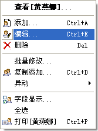
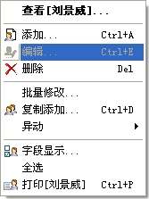
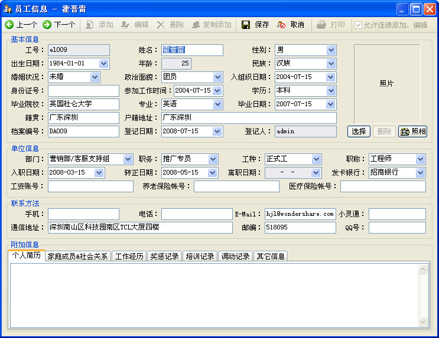
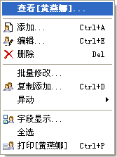
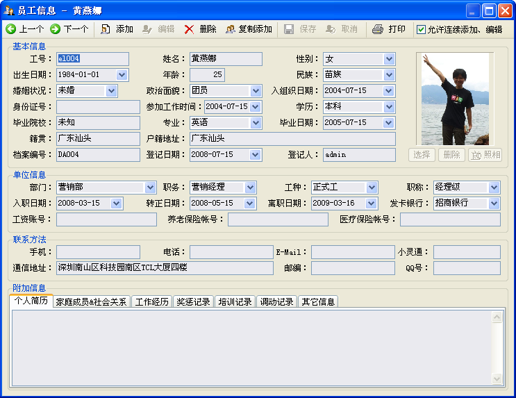

档案编辑也是人事档案管理系统的一个基本功能，它可操作的前提是存在有效的员工档案信息。在秋风人事档案管理系统中，你有四种方法编辑一个员工档案：
1．菜单的[档案管理]->[编辑]。
2．工具栏里的[编辑]按钮。
3．员工信息列表的右键菜单之[编辑]菜单项。
 
4．你在浏览一个员工时，它上面的[编辑]工具按钮可用。
以上几种方式您都可以使用，但更方便的是可以用快捷键操作：编辑功能的快捷键是Ctrl+E。
此功能，仅当您当前浏览的信息为在职员工时，才能进行编辑操作；您不能编辑处于离职状态的员工，当你浏览一个离职状态的员工时，编辑功能将不再有用。
无论您用哪种方式编辑，系统都会打开员工信息窗体，其中显示为员工编辑状态信息；在您编辑完成一条档案信息后，必须点击[保存]按钮(Ctrl+S)，才能够存储；若您不想 编辑档案信息，则可点击[取消]按钮(Esc)来取消当前档案信息的编辑。如下图所示：

当操作处于此状态时，只有保存、取消功能可以使用。
特别说明：您在使用编辑功能时，此界面上有一个选项[允许连续添加、编辑]，它是一个很有用的功能，且只在[浏览]状态下可以对其进行操作。它的作用是：当您勾选它时，在编辑员工档案时，[上一个]、[下一个]功能仍然可用。您可以以编辑一个信息之后点击[保存]，而继续用[上一个]、[下一个]定位到其它员工档案信息进行编辑，然后再点击[保存]，则您对其它员工档案进行的编辑操都，都将会被保存下来。
[查看]功能
您可以用此功能对员工档案信息进行查看，而不会对它进行编辑等操作；在存在于您选择一条员工信息的右键菜单中，默认对档案列表进行双击或者按Enter键时，就是对员外信息进行的浏览操作。如下图示：

以此方式打开的员工信息窗体，数据处于不可编辑状态，控件字段显示为淡青色，而其它功能按钮处于可用状态，如下图：

提示：如果您不习惯于双击执行浏览操作，您可以在[系统]->[选项]的基本参数中勾选[双击编辑数据]；同样，在员工信息窗体中，若数据处于可编辑状态，则Esc键先执行[取消]操作，然后关闭窗体。若您想直接以Esc关闭此窗体，可以在其中勾选[Esc键直接关闭员工信息窗体]选项，如下图示：